最近刷 B 站，在首页刷到一个视频：百大 up 主，B 站全站排名第 13，拥有 500+ 万粉丝的『机智的党妹』，被“黑客”攻击并勒索了。
这个视频是 up 主自己讲述事情的经过，在 B 站日排行最高达到第五名。
这篇文章想说什么
我写文章容易跑题，想到啥说啥。现在尝试开头一问，收束一下思维方向。
- 有这么个事
- 简单解释发生了什么
- 一点点原理（我尽量不写那么长）
- 对此普通人能做什么防备
注：
Hacker 是指对设计、编程和计算机科学方面具高度理解的人，一开始是中性词，只有技术高超的意思。中文大部分地区译作 黑客，台湾地区译作 骇客。
Cracker 是指恶意（一般是非法地）试图破解某个程序、系统或网络，进而窃盗、毁损或使其瘫痪的人。正确译法应该是 破坏者，或者 溃客。
Cracker没有道德标准，也没有“黑客精神”。Hacker 建设，而 Cracker 破坏。
但是由于翻译混乱，Cracker 也经常被翻译成 黑客 和 Cracker，现在提起 黑客，往往指的是 骇客，这个污名已经很难洗清了。
发生了什么
我们根据党妹视频的自述，还原一下事件经过
自建 NAS
简单说，党妹作为头部 up 主，视频制作精益求精。视频素材开始用 4K 高清，视频里出现各种高端的换场景、换装混剪，好像还有异地外景，这就导致素材量噌噌噌从几百 M 慢慢变成了 几百 G。（变成了 几百 G 是党妹视频中的自述，变大的原因像 4K 这些是我大致浏览之前的视频后猜的。之前没看过她的视频，也不懂剪辑，有可能说错。）
而且专业化之后肯定是团队作战，素材拷来拷去很不方便，所以他们团队自建了一个 NAS （Network Attached Storage，网络附加储存）。可以理解为一个自建的网盘，或者说在内网的公共硬盘。
这个 NAS，投入了十几万，长时间测试维护，觉得可以了，启用。
被黑
然后第一天就被黑了。所有文件被加密，留下一封勒索信，只有交了赎金才能拿回密码，重新解密。等于 NAS 上的视频素材被当做了人质（感觉人质哪里不对？文（件）质？素（材）质？）。
第一天 ……
因为视频制作精良，素材要求很高，成本涉及场地、设备、服化道、人工，甚至还有外景的差旅费。收入方面，500+ 万粉丝，按最近的视频平均 300 万左右的播放量，无论是创作激励还是潜在的一些商业合作，也是非常可观。无论从成本还是收入看，损失都很大。
但这个领域太新了，要立案，证据认定都成了个问题。几百 G 加密的乱码，怎么证明花了多少成本？还没发出来的视频，怎么证明能有多少收入？
buran 病毒
中的病毒叫 buran 勒索病毒。
上网搜了一下，国内网络安全机构在 19 年下半年就发出过安全预警，像这篇：《腾讯安全预警：Buran勒索病毒传入我国，用户宜小心处理不明邮件》 ，
还有这篇： 《利用IQY（Excel Web Query）文件分发，Buran勒索病毒又出新变种》 。
原理
可惜我不是吃安全这口饭的，上来就讲加壳、特征码、漏洞、注册表 这些也不是我擅长的。
加密
『通过加密保护信息安全』，倒是可以聊聊。
假定你有一些隐私信息，不想被人看到。可是不巧，手机（或硬盘）要拿去修。想想当年 GX 哥的遭遇。
资料还有用，不能删。不仅不能删，随时用到，随身携带。唯一的办法，就是加密。
私房钱藏在鞋柜里的New Balance<=>
\u79c1\u623f\u94b1\u85cf\u5728\u978b\u67dc\u91cc\u7684\u004e\u0065\u0077\u0020\u0042\u0061\u006c\u0061\u006e\u0063\u0065这种叫编码（Encode），不叫加密。字跟编码的对应关系是唯一的，像
\u79c1唯一对应私，你不认识，计算机可熟悉，解码（Decode）就能恢复。例子里用的是 Unicode 编码。
加密本质上是一系列特别复杂的 数学运算 。有意义的明文（原文）经加密运算之后得到无意义的密文。想重新得到明文，则要执行相反的解密运算。当然，如果大家都用一样的加密算法，解密没什么难的，所以加密过程还要引入一个变量：密钥（key，为了避免跟密码混淆，下面直接称 key）。加密算法一样，但每次 key 不同，不知道 key 就无法解密。（俗称的密码，实际上是口令（password），能通过运算转换成 key。）

如果使用经过理论和实践证明过的强加密算法，例如 AES 和 RSA，加密后 只有知道 key 才能读取有效信息，否则只能读到一堆加密后无意义的乱码。
如果不知道 key，只能暴力穷举。2 bit 的 key （实际上不允许），只有 00, 01, 10, 11 四种，一下子就全部试完。可如果是常见的 256 bit 长的 key，总共有 $ 2^{256} \approx 1.1579209\times10^{77} $ 种。这是一个非常大的数，科学家推断整个宇宙中的原子数也不过在 $ 10^{78} \sim 10^{82}$ 之间。
假定计算机运算特别快，一秒能试 $ 10^{8} $ 个 key，也得 $ 3.6717431\times10^{61} $ 年才能试完，仍然是个天文数字。即使调动整个比特币网络 18 年时的算力（$ 3.5\times10^{19} $ FLOPS），依然没有进入可以接受的范围。目前破解只有通过对硬件缺陷和人的疏漏（社会工程学）下手。
RSA 还要特殊一些，属于 非对称加密 ，简单说，它加密解密不同同一个 key，而是使用成对的 公钥 和 私钥。密钥对虽然关联，但是拿着其中一个算不出另一个。所以 公钥 可以公开，这也是它为什么叫公钥。作为代价，生成密钥对很慢，不像 AES 随机一串就可以了。另外，RSA 加密运算也比 AES 慢。非对称加密还有更多用途，感兴趣可以自己了解一下。

商业机密
其实你手里的是一系列非常值钱的商业机密，是谈判的重要筹码。竞争对手偷走了电脑，一边尝试解密，一边跟你谈判。你早就预料到这么一天，文件很多，有可能在电脑还在执行加密时，对方就出现把电脑带走，停掉加密。该怎么设计加密方案呢？
加密、解密 尽量快 。文件太多，别还没加密完就被发现了；要用的时候，也能尽快拿回来。
没有 key 时，暴力破解难度高 。
每个文件 独立 key 。就算暴力破解了一个，还有好多个。而且谈判时能解密一个作为筹码：不骗你，我真有密钥。
只保管一个 key ，多了不好管。
- 就算 中途打断 ，已经完成加密的文件也不会受影响。
这里面 1 和 2，3 和 4 其实是矛盾的。但通过巧妙的设计，是可以鱼与熊掌兼得的。
- 一开始，生成一对 512 bit 的 RSA 密钥对，把私钥送到安全的地方。RSA 生成密钥对很慢，但只生成一次。
- 文件用 AES 256 bit 的 key 加密，key 每次都重新生成。
- 每个 AES key 都用 RSA 公钥加密一下，跟对应的文件放在一起。RSA 加密相对较慢，但是 AES key 只有 256 bit，只能放下 32 个字母或者约 16 个汉字，还没这句话长，快慢几乎没有差别。
看看效果：
- AES 生成 key 和 加密都很快，满足 1。慢操作只有生成 RSA 密钥对，只执行一次，影响不大，干脆设长一点。
- 每个文件独立的 AES key，满足 3。
- AES key 加密之后跟文件放一起，不用记，只需要保管 RSA 私钥。满足 4。
- 无论是文件数那么多个 256 bit AES key，还是一个 512 bit RSA 私钥，破解难度都是天文数字。满足 2。
- 正在加密时被打断，拿到了 RSA 公钥，完全不影响前面完成加密的文件，满足 5。
Cracker 帮你加密
以上加密方案真是兼顾了不同情况，考虑周到。可要不是你自己主动加密呢？
要是 Cracker 侵入你的电脑，帮你加密，密码在他手里呢？
外边有坏人寻仇，你把家人藏起来，防盗门锁起来，这叫『保护』；如果坏人把你家人藏起来锁起来，就变成什么了？
变成了绑架。
可是 Cracker 是怎么『帮你加密』的呢？
两种可能：远程控制你的电脑后运行病毒，或者诱导你运行病毒。
前者往往扫描 远程控制端口 ，发现端口开着就开始暴力枚举密码。如果密码不长，没有混进特殊字符，或者干脆就是网上常见的弱口令，很快就被猜中了。也有可能系统有某些提权漏洞，没打对应的补丁。总之，现在 Cracker 就像用自己电脑一样，远程控制了你的电脑。
后者就是把病毒混在邮件、视频、文档、软件里，诱导你打开。你在打开 来路不明 的 邮件附件、小电影、文档、破解软件 时，病毒也悄悄运行起来了。
然后这个 buran 病毒就开始执行上面的加密操作。除此之外，它还做了一些额外工作（不一定全）：
- 它加密所有文件，除了一些重要的系统目录、系统文件，避免系统崩溃。加密完把原来的文件彻底删除。
- 禁用系统自动修复功能、删除系统备份、删除RDP连接历史记录、删除系统日志，并且关闭系统日志开机启动。
- 生成勒索信。
- 事情完成之后，把各种痕迹删掉，把病毒程序删掉。
两难境地
前面花了较长篇幅讲加密。看到那些天文数字，我想你能大致理解，不乖乖交赎金，文件可能回不来。除非安全研究员发现 Cracker 留下了什么漏洞，可以推算出 key。我觉得这希望不大。
但是另一方面，也没有办法确定，Cracker 收了钱一定会办事。如果对方得寸进尺怎么办？
所以，明明都是现成的技术，并没有很高深的地方，但是顶尖的网络安全机构，都束手无策。
最好的方法，其实是事前防备。由于最近打算限制文章字数，多写短文，这篇先写到这里。防备部分后续再发一篇接着聊。

本文为本人原创，采用知识共享 “署名-非商业性使用-相同方式共享” 4.0 (CC BY-NC-SA 4.0)”许可协议进行许可。
本作品可自由复制、传播及基于本作品进行演绎创作。如有以上需要，请留言告知，在文章开头明显位置加上署名（Jayce Chant）、原链接及许可协议信息，并明确指出修改（如有），不得用于商业用途。谢谢合作。
请点击查看协议的中文摘要。